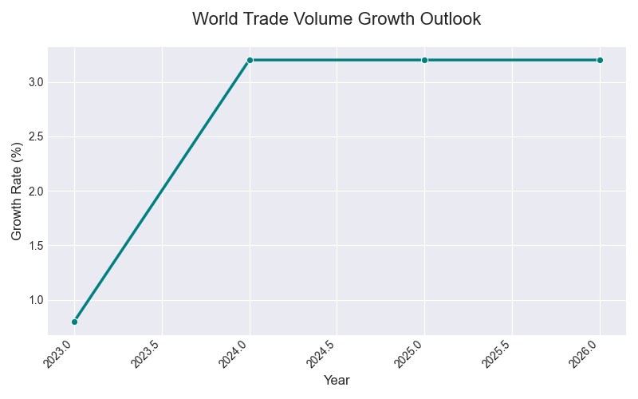

世界経済の成長見通し (2022年～2026年) - 分析と可視化
このページでは、提供された世界経済の成長見通しに関するテキストデータを基に、主要なトレンドを可視化し、要点をまとめました。 データは手動でCSVファイルに変換し、Python (Pandas, Matplotlib, Seaborn) を用いてグラフを生成しています。
元データ概要： 世界全体の経済成長率、地域・国別の動向、所得グループ別の見通し、世界貿易と商品価格の予測などが含まれます。
使用ツール： Python (Pandas, Matplotlib, Seaborn), 手動データ入力
全体傾向

世界全体の経済成長率は、2022年の3.2%から2023年には2.7%に減速し、その後2024年から2026年にかけて2.7%で横ばいと予測されています。 購買力平価（PPP）で調整した場合は、やや高めの3.2%前後で安定する見込みです。
地域・国別の動向

先進国全体では、2023年以降は1.7%前後の緩やかな成長が続くと見られています。 アメリカは2023年の2.9%から徐々に減速し2026年には2.0%に、ユーロ圏は2023年の低調な0.4%から徐々に回復し2026年には1.2%へと予測されています。 日本は2024年に一時ゼロ成長となるものの、翌年以降は1%前後の回復が見込まれます。
新興国・途上国（EMDEs）全体では、2023年は4.2%、以後も4%台の安定した成長が予測されています。 地域別に見ると、中国は2023年に5.2%と回復後、徐々に減速して2026年には4.0%に。 インドは安定した6.5～6.7%の成長が見込まれます。 ロシアは2023年に3.6%と回復後、2026年には1.1%まで減速する見通しです。 ブラジルは2024年に3.2%と好調ですが、2026年には2.3%へ減速すると予測されています。 他の地域や国についても、それぞれの経済状況に応じた見通しが示されています。（詳細はCSVデータおよび提供テキスト参照）
特記事項（所得グループ別）
所得グループ別に見ると、高所得国の成長率は1.7～1.9%前後で安定すると予測されています。 中所得国は4.1～4.6%と比較的高めの成長が見込まれます。 低所得国は2023年に3.0%と一時落ち込むものの、2026年には5.9%に回復すると予測されています。
世界貿易と商品価格の見通し
世界貿易量の成長率
原油価格（ブレント）
世界貿易量は、2023年に0.8%とほぼ停滞した後、2024年以降は3.2%程度まで回復する見通しです。 商品価格（ドルベース）については、世界銀行商品価格指数（2022年=100）が2023年の108.0から2026年には96.7へと緩やかに下落すると予測されています。 特にエネルギー価格の下落が大きく、2022年の152.6から2026年には91.7まで減少する見込みです。 原油価格（ブレント）は2022年の99.8ドルから2026年には71.0ドルへと予測されています。
結論と補足
提供されたデータに基づく分析からは、世界経済がパンデミック後の回復と地政学的要因の中で、複雑な調整局面にあることが示唆されます。 全体としては緩やかな成長が見込まれるものの、地域や国、所得グループによってその様相は大きく異なります。 新興国・途上国が引き続き世界経済の成長を牽引する一方で、先進国はインフレ抑制と安定成長のバランスを模索する状況が続くと考えられます。 世界貿易の回復や商品価格の動向も、今後の経済見通しに影響を与える重要な要素です。
補足：本予測は市場為替レートや購買力平価ベースで計算されており、頻繁に更新される可能性があります。一部の国（トルクメニスタン、ベネズエラ）は信頼できるデータがないため集計から除外されています。このページで表示しているグラフや要約は、提供された特定時点のテキストデータに基づいています。